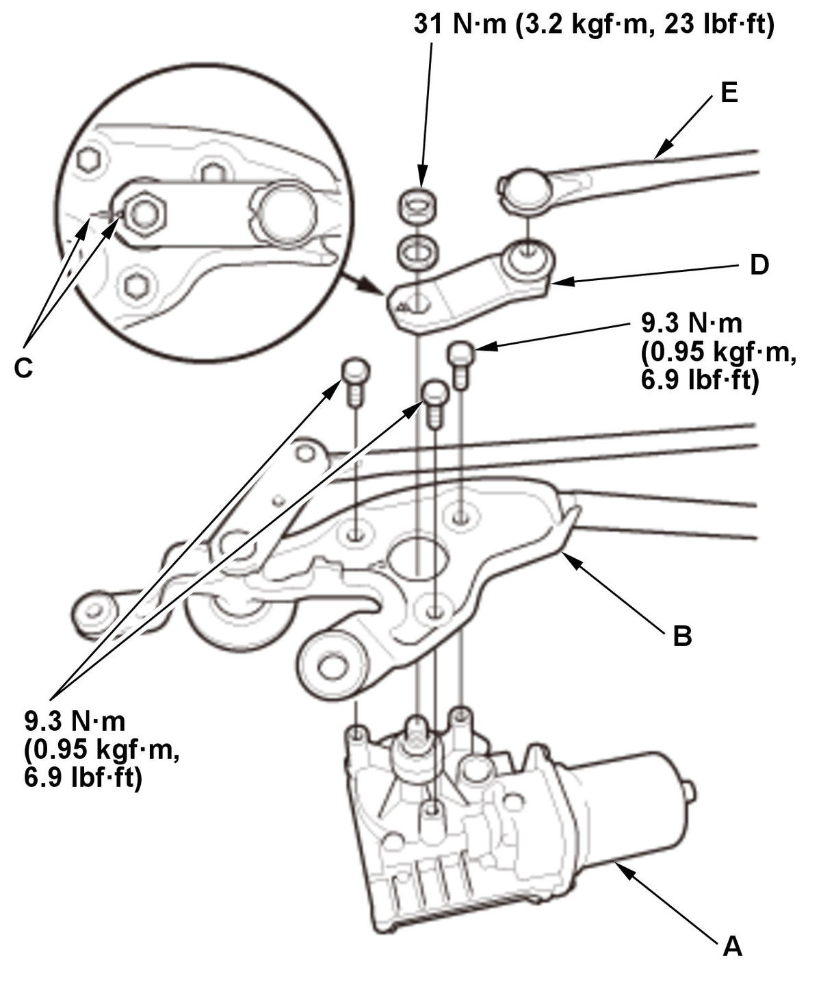

Windshield Wiper Control Unit/Motor Removal and Installation: Installation
- Windshield Wiper Motor - Install

Courtesy of HONDA, U.S.A., INC.NOTE: Bolt threads are not provided on the new wiper motor. Install the wiper motor to the linkage as follows: 1. Before installing the wiper motor, connect the wiper motor connector, and turn the wiper/washer switch ON to (LO) or (HI) position, then OFF to return the wiper motor shaft to the park position.
NOTE:
- Do not use the windshield wiper/washer switch (AUTO) or (INT) position in this step.
- Apply multipurpose grease to the moving parts.
- Check the wiper motor operation.
2. Set the motor (A) and the wiper linkage assembly (B), and tighten the bolts until the bolt head just contacts the linkage.
NOTE:
- Install the provided self-tapping bolts.
- Keep the bolts perfectly straight while bolting them in.
- Do not use air tools and impact wrenches.
3. Loosen the bolts, then retighten the bolts to the specified torque.
4. Align the marks (C) on the link (D) and the wiper linkage assembly, and install the link.
5. Install the connection rod (E).
- Linkage Assembly - Install
1. Install the wiper linkage assembly (A). 2. Connect the connector (B).
- Cowl Cover - Install
- Windshield Wiper Arm/Nozzle - Adjust